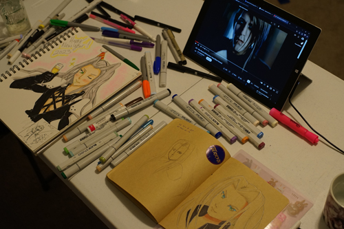
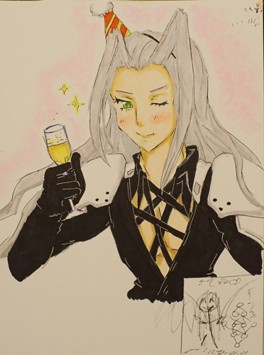
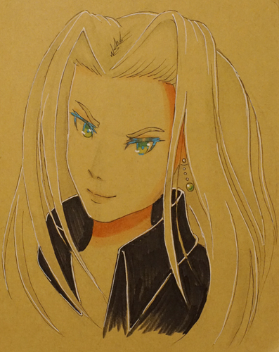
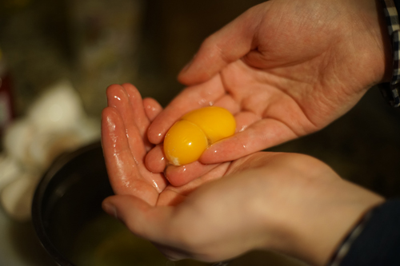

I had a ultra fun new years with kohi! We were excited to draw together so she brought her copic collection. I wasn't prepared with my brown paper sketchbook but I tried to make it work. I challenged her to draw Sephiroth with me.
Here's her Sephiroth!! She goes right in with the fineliners! No sketch or anything! I'm way too scared to try that. Her Sephiroth looks so festive with his party hat and his champange! I love the extra straps she added and all the shading on his chest XD They really add to his kakkoi look! Ryan's Sephiroth is on the bottom right. He was the only boy we could convince to draw with us.
And my (3rd) Sephiroth of the night. I drew one before she arrived, then one on the back of that page, realized I couldn't use copic on it, and then started a new page. Very busy night! I chose to give my Sephiroth a gay earring because he needed a gay earring.
Check out the EXTRA LUCKY lucky new year's egg pull! WOW! 2023 will definitely be a good one!
While waiting for the party to start, I filled out this MySpace questionnaire. It's not a particularly exciting one and I feel it's better suited for high schoolers.